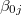
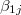

| 階層的線形モデルによるデータ分析の実際1 — HLM6，SAS，Rを利用して — |
| 階層的線形モデルによるデータ分析の実際1 — HLM6，SAS，Rを利用して — |
今回は，最も単純な2水準（2レベル）のモデルの分析例を示すために，High School and Beyond調査からのデータを利用する。このデータはHLM6をダウンロードすれば，サンプルデータとして提供されるものである 1。 このデータは，学校 生徒という2段階のサンプリングを経て得られたものであり，生徒個人の情報として数学の成績（MATHACH），また学校に関する情報として学校の区分（school SECTOR：カトリックか公立か）といった変数が含まれている。 また，各生徒について家庭の社会経済的地位を表す尺度の得点（Socio-Economic Status: SES）が測定されている他，それを各学校ごとに平均した値がその学校に通う生徒の平均的な社会経済的地位を表す変数（MEANSES）として計算されている。
今回は，生徒の数学の成績（MATHACH）が個々の生徒の家庭の社会経済的地位（SES），および生徒が属する学校の区分（SECTOR），そして学校に通う生徒の平均的社会経済的地位（MEANSES）からどのように説明されるかを2レベルの階層的線形モデルによってモデル化し，実際に分析を行う。 2
レベル１（生徒） |
レベル２（学校） |
MATHACH（数学の成績） |
SECTOR（学校の区分） |
SES（家庭の社会経済的地位） |
MEANSES（SESの学校平均） |
ユニットは生徒（7185名）である。 3 このレベルでは，生徒の社会経済的地位（SES）を用いて数学の成績（MATHACH）を予測する回帰式を立てる。
| (1) |
ユニットは学校（160校）である。 4 このレベルでは，レベル1の回帰式における学校ごとの切片と傾きを学校の区分（SECTOR）および学校の平均的な社会経済的地位（MEANSES）によって予測する回帰式を立てる。
| (5) | |||
| (6) |
HLM6では，以下のような手順で分析を行う。 また，分析を行う過程で様々なファイルが作成される。
データファイルの作成
データファイルを読み込み，十分統計量を計算する
分析に用いるモデルの選択（レベルの数など）
データファイルの読み込み，変数の指定など
MDMTファイル（.mdmt）を作成（MDMファイルで指定した内容を格納）
十分統計量を計算し，MDMファイル（.mdm）として保存
STSファイル（.sts）を確認（基本統計量を格納）
モデル式を指定し，出力や推定に関するオプションを指定
指定した内容を，HLMファイル（.hlm）もしくはMLMファイル（.mlm）で保存
分析の実行
結果の確認
HLM6においては，データファイルはそれぞれのレベルごとに1つずつ作成する必要がある。 6 すなわち2レベルのモデルであれば2種類の，3レベルのモデルであれば3種類のデータファイルを作成することになる。
HLM6においてデータファイルを作成するには，以下の2つの方法がある。
ASCII形式（通常のテキストファイル）を用いる方法
他の統計パッケージのファイルを入力として用いる方法7
以下，各々について説明する。
HLM6では，データ入力のフォーマットが厳格に定められている。 以下にその規則のうち重要と思われるものを挙げる。
データの読み込みはカラム指定で行われるので，スペースを調整するなどして各変数ごとに縦の列をそろえておく。
データファイルにはIDを表す変数を入れる必要がある。 8 ID変数は，自身よりも一段上のレベルのケースとの対応を示すものであり，そのレベルのケースのIDではない。
すべてのデータはID変数の値ごとにまとめられていなければいけない。 9
同じファイル内のID変数の桁はそろえておかなくてはならない。
欠測値は，レベル1のデータファイルでのみ許される。 10
SPSSのデータファイル形式（.sav）によってデータセットを作成することもできる。 この方法では各セルに1つずつデータを入れることから，ASCIIのようにカラムをそろえるなどの配慮を行わなくてよく，後で説明するMDMファイルの作成もASCII形式のデータファイルを用いた場合よりも簡単にできるなど，何かと便利である。
その他の規則はASCIIによる方法のところで述べたのと同様である。
HLM6では，実際の分析は生データを直接用いるのではなく，それをいったん処理したMDM（Multivariate Data Matrix）ファイル（.mdm）の情報を用いて行われる。 12 従って，分析を行う前にまず生データを入力したファイルからMDMファイルを作成する必要がある。 また，いったんMDMファイルを作っておけば，その後の分析には生データファイルを直接用いることなく，すでに作ったMDMファイルを繰り返して使うことができる。
ここでは，前項で取り上げたASCII形式で作成されたデータファイル（.datファイル）およびSPSSによって作成されたデータファイル（.savファイル）からMDMファイルを作成する方法について解説する。
まず，HLM6のショートカットをダブルクリックしてHLM6を起動する。 13
すると，以下のようなウィンドウが立ち上がるはずである。 HLM6の操作は基本的にこのウィンドウから行うことになる。
ここでは，ASCII形式で作成したデータファイルを用いてMDMファイルを作成する方法について説明する。
前項で，データファイルはモデルの水準の数だけ必要であると説明したが，MDMファイルは1つのモデルに1つ作ればよい。
まず，[File]-[Make new MDM file]-[ASCII input]とメニューを選択する。
次に，分析するモデルのタイプを選択し，[OK]をクリックする。
![\includegraphics[width=6cm]{makemdm-ascii2.ps}](images/img-0012.png)
"Make MDM - HLM2"が開く。 ここで，データファイルからMDMファイルを作成するためのデータに関する情報を指定することになる。
以下に，各項目について入力・指定の方法について述べる。
作成するMDMファイルの名前を拡張子つきで入力する。 15
データの種類が，「集団−個人」であるか「個人−測定」であるかを指定する。 16 分析の内容には直接関係ないが，後にモデル式の指定をする際にどちらを選択したかで記号の区別がなされることになる。
ここでは，レベル1のデータセットについての情報を指定することになる。
レベル1のデータファイルをフルパスで入力する。 17 あるいは，右にある"Browse"ボタンをクリックしてファイルを選択すれば，自動的にそのファイルのフルパスが入力される。
18ID変数を除いた変数の数を半角で入力する。
データに欠側がある場合はここで宣言しておく。 19欠測値があれば，欠側のあるケースをどの段階で削除するか（MDMファイルを作る段階/分析を行う段階）を選択することになる。
データのフォーマット（変数のカラム）の指定を行う。 20 その際の規則は以下のとおりである。
クリックしてウィンドウを開き，変数のラベル（変数名）を半角英数字で入力する。日本語で入力すると文字化けしてしまうので注意。23
![\includegraphics[width=8cm]{makemdm-ascii4.ps}](images/img-0014.png)
レベル2のデータファイルに関する情報を入力する。 24 基本的にレベル1の場合と同様に行えばよいが，欠測はレベル2以上では許容されないためこれに関しては指定を行わない。
[Save mdmt file]をクリックして，MDMT（MDM Template）ファイル（.mdmt）を作る。 MDMTファイルには，MDMファイルを作るために指定した情報25が格納される 26。
[Make MDM]ボタンをクリックして，MDMファイルをつくる。 次のような画面が現れて，MDMファイルが作られたことがわかる。 27
![\includegraphics[width=10cm]{prompt1.ps}](images/img-0015.png)
[Check Stats]ボタンをクリックすると，各変数の基本統計量を格納したSTSファイル（hlm2mdm.sts）を確認することができる。28
[Done]ボタンをクリックすることでMDMファイルの作成段階は終了し，モデルの指定を行う画面が現れる。 29
ここでは，SPSSによって作成した.sav形式によるデータファイルを用いてMDMファイルを作成する方法を解説する。
まず，[File]-[Make new MDM file]-[Stat package input]とメニューを選択する。
次に，分析するモデルのタイプを選択し，[OK]をクリックする。
"Make MDM - HLM2"が開く。
ここで，データファイルからMDMファイルを作成するためのデータに関する情報を指定することになる。
以下に，各項目について入力・指定の方法について述べる。
作成するMDMファイルの名前を拡張子（.mdm）つきで入力する。 31
ここで，データファイルの形式をプルダウンメニューから選択する。 32
データの種類が，「集団−個人」であるか「個人−測定」であるかを指定する。 33
ここでは，レベル1のデータファイルに関する指定を行う。
[Browse]ボタンをクリックしてファイルを選択し，34"Level-1 File Name: "の右側に，データファイルのフルパスが表示されるのを確認。
[Choose Variables]をクリックして，レベル1のデータファイルから読み込む変数の指定（四角をクリックしてチェックをつける）を行う。SPSSファイルではすでに変数名がつけられているので，ここではID変数およびMDMファイルに読み込む変数（分析の対象としたい変数）を指定するだけでよい。
もし欠測値があれば "Missing Data?" で "Yes" を，なければ "No" を選択する。 35 "Yes"を選択した場合は，欠測値を含むケースをいずれの段階で除去するか（MDMファイルを作る段階 / 分析を行う段階），選択する。
次に，レベル2のデータファイルに関する指定を行う。
[Browse]ボタンをクリックして，36レベル2のデータファイルを指定する。
[Choose Variables]ボタンをクリックして，レベル2で読み込む変数の指定を行う。
[Save mdmt file]をクリックして，MDMテンプレートファイルを保存する。 37
[Make MDM]をクリックして，MDMファイルを作成する。 次のような画面が現れて，MDMファイルが作られたことがわかる。 38
[Check Stats]ボタンをクリックすると，各変数の基本統計量を格納したSTSファイル（hlm2mdm.sts）を確認することができる。39
[Done]ボタンをクリックすることでMDMファイルの作成段階は終了し，モデルの指定を行う画面が現れる。
![\includegraphics[width=10cm]{makehlm1.ps}](images/img-0021.png)
MDMファイルを作成したあとは，それを元に実際に分析したい統計モデルを指定することになる。40
HLM6では，式(1)から式(6)に従って変数を指定していけばモデルの指定ができる。 こうした直感的な操作を可能にする優れたGUI機能を持つことがHLM6の大きな特徴となっている。
式(1)のとおり，ここでは，生徒の数学の成績（MATHACH）をその生徒の家庭の社会経済的地位（SES）で説明するモデル式を立てる。
まず，[Level-1]ボタンをクリックして，レベル1の入力モードにする（通常はすでになっている）。 下にレベル1のモデル式に投入するための変数の一覧が表示されているので，そこから"MATHACH"をクリックし，"Outcome variable"を選択する。
これで，"MATHACH"が従属変数に入ったモデル式が表示される。
![\includegraphics[width=10cm]{makehlm3.ps}](images/img-0023.png)
次に，"SES"をクリックして，"add variable group centered"を選択する。 これを選択した場合，説明変数の部分が太字（ボールド体）で表示される。 41
![\includegraphics[width=10cm]{makehlm4.ps}](images/img-0024.png)
レベル1のモデル式に説明変数として"SES"が投入されたのが確認できる。 もし間違った変数を投入してしまった際は，その変数をもう一度選択し，"Delete variable from model"を選択すればよい。
![\includegraphics[width=15cm]{makehlm5.ps}](images/img-0025.png)
[Level-2]をクリックして，レベル2のモデルの入力モードに切り替える。 切り替えた直後は，レベル1のモデル式の切片（）を説明するモデル式の部分が黄色くなっており，まずこの部分の入力を行う。 式(5)を参照し，先ほどと同じように"SECTOR"および"MEANSES"を説明変数として投入する（ここではともに"uncenterd"を選択。この場合説明変数は細字で表示される。）。
次に， を説明するモデル式のエリアをクリックして，ここを黄色くさせる。 式(6)を参照し，先ほどと同じように"SECTOR"および"MEANSES"を説明変数として投入する（ここではともに"uncenterd"を選択。）。
を説明するモデル式のエリアをクリックして，ここを黄色くさせる。 式(6)を参照し，先ほどと同じように"SECTOR"および"MEANSES"を説明変数として投入する（ここではともに"uncenterd"を選択。）。
![\includegraphics[width=15cm]{makehlm6.ps}](images/img-0028.png)
ここで，よく見るとレベル2の残差（ ）が灰色になっているのに気づく。 これは残差成分がモデル式に投入されていないことを示しているので，この部分をクリックして黒くする。これでがモデルに投入された。 42
）が灰色になっているのに気づく。 これは残差成分がモデル式に投入されていないことを示しているので，この部分をクリックして黒くする。これでがモデルに投入された。 42
![\includegraphics[width=15cm]{makehlm7.ps}](images/img-0030.png)
次に，さまざまなオプションの設定を行う。 43
[Basic Settings]メニューでは，従属変数の分布に関する指定，結果のファイルの名前，分析のタイトル，残差ファイル指定などを行うことができる。
まず，[Basic Setting]をクリックする。 44
ここでは，残差を出力するファイルの指定について説明する。 残差ファイルには，各レベルの残差だけでなくレベル１の切片や傾きの推定値など重要な情報がたくさん含まれている。 残差ファイルの設定は，各レベルごとに行う。
まず，レベル１の残差ファイルの設定を行うために，[Level-1 Residual File]をクリックする。
レベル１，レベル２それぞれの"Variables in residual file"に，モデルの設定のところで投入した変数がそのまま入っているはずである。 もし必要であればさらに変数をダブルクリックして投入することができる。 ただし，すでにモデルに投入ずみの変数は取り除くことができない。
ここではデフォルトのままとし，"Residual File Type"で"SPSS"を選択した。 45 ファイル名もデフォルトのまま，"resfil1.sav"とした。
[OK]をクリックしてこのウィンドウを閉じる。
次に，レベル2モデルの残差ファイルを指定する。 [Level-2 Residual File]をクリックする。
ここでも，"Variables in residual file"に，モデルの設定のところで投入したレベル２の変数がそのまま入っているはずである。 レベル1のときと同様，変数に関してはデフォルトのままとし，"Residual File Type"で"SPSS"を選択し，[OK]をクリックする。
これで，分析後"resfil1.sav"および"resfil2.sav"という2つの残差ファイルができるはずである。
"Title"に，この分析のタイトルを入れる。 46
"Output file name"に，出力ファイルの名前をフルパスで入力する。 ここでは，デフォルトのままとした。
"Graph file name"に，グラフを作る際のファイルの名前をフルパスで入力する。 ここでは，デフォルトのままとした。
[OK]をクリックして，終了。
ここでは，反復計算，推定法，統計的検定に関する設定などを行うことができる。 今回はデフォルトのままにしておく。
ここまで設定した内容は，実際に分析を行う前にHLMファイル（.hlm）47として保存する必要がある。
[File]-[Save As]で適切なファイル名を指定し，HLMファイルを保存する。 48
[Run Analysis]をクリックする。 49
反復計算の過程を表す画面が表示される。 計算が終わると，自動的に消える。 50
分析はここで終了したので，結果を確認する。 [File]-[View Output]とクリックすると，結果を格納したテキストファイルが自動的に立ち上がる。 51
以下では，このファイルを見ながら結果の解釈を行うことになる。
SPECIFICATIONS FOR THIS HLM2 RUN
# 分析のタイトル #
Problem Title: HSB-GD
# 分析に使用したMDMファイル #
The data source for this run = hsb-gd.mdm
# モデルの指定を行った.hlmファイル #
The command file for this run = C:\Program Files\HLM6S\Examples\AppendxA\hsb-gd.hlm
# 出力ファイルの名前 #
Output file name = C:\Program Files\HLM6S\Examples\AppendxA\hlm2.txt
# サンプルサイズおよび指定した反復回数 #
The maximum number of level-1 units = 7185
The maximum number of level-2 units = 160
The maximum number of iterations = 100
# 分散・共分散行列の推定の方法（デフォルトでは，制約つき最尤推定。） #
Method of estimation: restricted maximum likelihood
# 重み付けに関する情報 #
Weighting Specification
-----------------------
Weight
Variable
Weighting? Name Normalized?
Level 1 no
Level 2 no
Precision no
# 従属変数はMATHACH #
The outcome variable is MATHACH
# モデルに含まれる切片および傾き（偏回帰係数）をレベルごとに表示 #
The model specified for the fixed effects was:
----------------------------------------------------
Level-1 Level-2
Coefficients Predictors
---------------------- ---------------
INTRCPT1, B0 INTRCPT2, G00
SECTOR, G01
MEANSES, G02
* SES slope, B1 INTRCPT2, G10
SECTOR, G11
MEANSES, G12
# SESは集団平均でセンタリングした。 #
'*' - This level-1 predictor has been centered around its group mean.
# 分散，共分散行列に関する指定 #
The model specified for the covariance components was:
---------------------------------------------------------
Sigma squared (constant across level-2 units)
Tau dimensions
INTRCPT1
SES slope
# 指定したモデル式を提示 #
Summary of the model specified (in equation format)
---------------------------------------------------
Level-1 Model
Y = B0 + B1*(SES) + R
Level-2 Model
B0 = G00 + G01*(SECTOR) + G02*(MEANSES) + U0
B1 = G10 + G11*(SECTOR) + G12*(MEANSES) + U1
# 収束するまでの反復数 #
Iterations stopped due to small change in likelihood function
******* ITERATION 61 *******
# レベル1の分散の推定値 #
Sigma_squared = 36.70313
# レベル2の分散・共分散行列の推定値 #
Tau
INTRCPT1,B0 2.37996 0.19058
SES,B1 0.19058 0.14892
# レベル2の分散・共分散行列を相関行列に直したもの #
Tau (as correlations)
INTRCPT1,B0 1.000 0.320
SES,B1 0.320 1.000
# レベル1の切片と傾きの推定値の信頼性 (Reliability) #
----------------------------------------------------
Random level-1 coefficient Reliability estimate
----------------------------------------------------
INTRCPT1, B0 0.733
SES, B1 0.073
----------------------------------------------------
# 信頼性の値が1に近いほど，レベル1の切片と傾きを推定する際にサンプル全体の情報に対して
# 当該集団の情報を利用する割合が大きくなる。信頼性は集団ごとに算出されるものであるが，
# ここでは全集団にわたって平均した値が報告されている。#
# 最終的な尤度関数の値 #
The value of the likelihood function at iteration 61 = -2.325094E+004
# レベル2の切片と偏回帰係数の推定値と検定統計量，有意性検定の結果 #
The outcome variable is MATHACH
Final estimation of fixed effects:
----------------------------------------------------------------------------
Standard Approx.
Fixed Effect Coefficient Error T-ratio d.f. P-value
----------------------------------------------------------------------------
For INTRCPT1, B0
INTRCPT2, G00 12.096006 0.198734 60.865 157 0.000
SECTOR, G01 1.226384 0.306272 4.004 157 0.000
MEANSES, G02 5.333056 0.369161 14.446 157 0.000
For SES slope, B1
INTRCPT2, G10 2.937981 0.157135 18.697 157 0.000
SECTOR, G11 -1.640954 0.242905 -6.756 157 0.000
MEANSES, G12 1.034427 0.302566 3.419 157 0.001
----------------------------------------------------------------------------
The outcome variable is MATHACH
# 最高次のレベルのサンプルサイズが極めて大きい場合は，（特に分散共分散行列に関する設定が間違って
# いるかもしれないことを見越して）こちらの結果を採用するのが望ましいとされている。今回はこちらを
# 見ればよい。（こちらを参照する必要がない場合はそのような指示が表示される。）
Final estimation of fixed effects
(with robust standard errors)
----------------------------------------------------------------------------
Standard Approx.
Fixed Effect Coefficient Error T-ratio d.f. P-value
----------------------------------------------------------------------------
For INTRCPT1, B0
INTRCPT2, G00 12.096006 0.173699 69.638 157 0.000
SECTOR, G01 1.226384 0.308484 3.976 157 0.000
MEANSES, G02 5.333056 0.334600 15.939 157 0.000
For SES slope, B1
INTRCPT2, G10 2.937981 0.147620 19.902 157 0.000
SECTOR, G11 -1.640954 0.237401 -6.912 157 0.000
MEANSES, G12 1.034427 0.332785 3.108 157 0.003
----------------------------------------------------------------------------
# 最終的な分散の推定値と検定結果 #
Final estimation of variance components:
-----------------------------------------------------------------------------
Random Effect Standard Variance df Chi-square P-value
Deviation Component
-----------------------------------------------------------------------------
INTRCPT1, U0 1.54271 2.37996 157 605.29503 0.000
SES slope, U1 0.38590 0.14892 157 162.30867 0.369
level-1, R 6.05831 36.70313
-----------------------------------------------------------------------------
# Deviance # Statistics for current covariance components model -------------------------------------------------- Deviance = 46501.875643 # 推定した分散・共分散の数 # Number of estimated parameters = 4
HLM6には，さまざまなグラフを表示させる機能がついている。 ここでは，例として式(1)で示したレベル1の回帰式が，学校の属性を表すSECTORによってどのように異なるのかグラフで示してみたい。
[File]-[Graph Equations]-[Level-1 equation graphing]を選択する。
レベル1のモデル式をグラフ化するためのウィンドウが立ち上がる。
![\includegraphics[width=10cm]{graph2.ps}](images/img-0037.png)
レベル1の説明変数を投入する。ここでは，"SES"を選択。
表示するグループの数を選択する。ここでは，"All groups"を選択。
学校を分類する変数を選択。ここでは，"SECTOR"を選択。
[OK]をクリックすると，グラフが表示される。
このグラフを見ると，Cathoric（SECTOR=1）の学校のほうが切片の値は大きいが傾きは小さい傾向にあることがわかる。 これはSECTORにかかるレベル2の偏回帰係数の推定値の符号と一致している。
ここで，*ページに示したレベル2の偏回帰係数の推定結果の欄を次に再掲したのでグラフとの対応を確認されたい。
変数SECTORにかかる偏回帰係数の値に関して，切片（"INTRCPT1, B0"）欄では とプラスの値であるのに対し，傾き（"SES slope, B1"）欄では
とプラスの値であるのに対し，傾き（"SES slope, B1"）欄では とマイナスの値となっていることがわかる。
とマイナスの値となっていることがわかる。
HLM6では，結果の出力にレベル1の（この場合は学校ごとの）切片や傾きの推定値は出力されない。 これらについては残差ファイルの中に格納されているため，必要であればこちらを確認する必要がある。 また，残差の確認はモデルの仮定が成り立っているかどうかをチェックするためにも有効である。
デフォルトでは，MDMファイルを格納したフォルダに残差ファイルが格納されているはずである。 53
![\includegraphics[width=14cm]{zansa1.ps}](images/img-0042.png)
"l1resid"とあるのが，レベル1の残差である。 "fitval"がモデル式によって予測された従属変数の値であり，これら2つの値を合計すると"mathach"と等しくなる。
![\includegraphics[width=14cm]{zansa2.ps}](images/img-0043.png)
レベル2の残差ファイルにはかなり多くの情報が格納されているので，重要と思われるものだけを以下にピックアップして説明した。
"ebintrcp"とあるのは， 54 レベル1の切片（）の推定に経験ベイズ（empirical Bayes）法を用いた際の残差（）である。 同様に"ebses"とあるのは，レベル1の傾き（）に経験ベイズ法を用いた際の残差（ ）である。
）である。
"olintrcp"，"olses"とあるのは，それぞれレベル1の切片（）および傾き（）を（学校ごとに）通常の最小2乗（ordinary least-squares）法で推定した際の残差（および）である。 55 この方法では経験ベイズ法の場合と異なりサンプル全体の情報を使っていないので，"eb・・・"で示した残差よりもこちらの方が残差（の絶対値）は大きくなっている。
それぞれレベル1の切片と傾きのレベル2モデルによる予測値である。
それぞれ 56 レベル1の切片と傾きの経験ベイズ推定値である。 これは，予測値("fv・・・")に残差の値("eb・・・")を足したものに等しい。
Footnotes
 は，番目の学校の生徒のSESの平均である。このようなセンタリングを行う方法および理由については後で述べる。
は，番目の学校の生徒のSESの平均である。このようなセンタリングを行う方法および理由については後で述べる。 |
(2) |
 ）が含まれている。 これは，レベル1の切片および傾きには今回用意した2つの説明変数（SECTOR, MEANSES）のみでは説明できない独自の成分があるということを示している。
）が含まれている。 これは，レベル1の切片および傾きには今回用意した2つの説明変数（SECTOR, MEANSES）のみでは説明できない独自の成分があるということを示している。| 階層的線形モデルによるデータ分析の実際1 — HLM6，SAS，Rを利用して — |